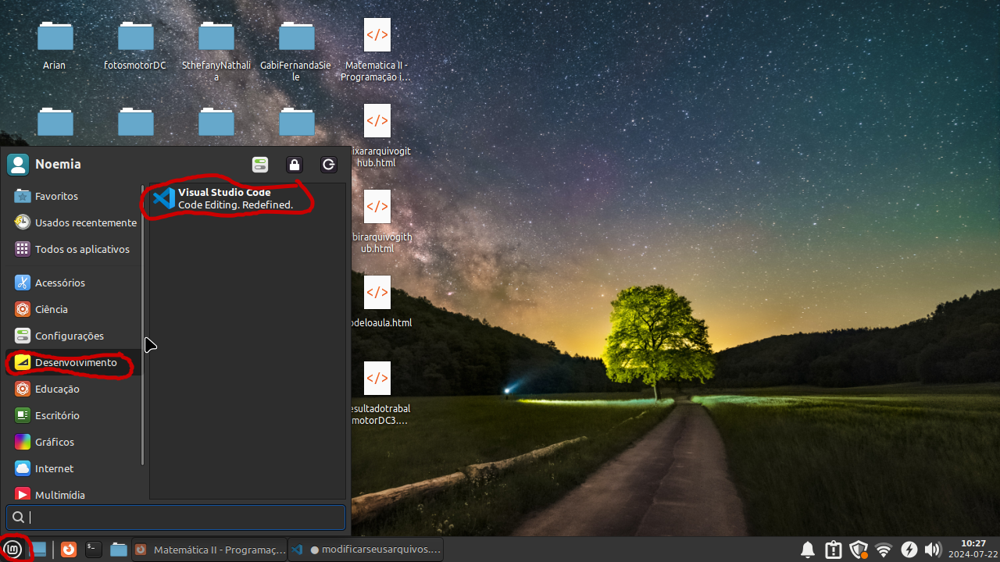
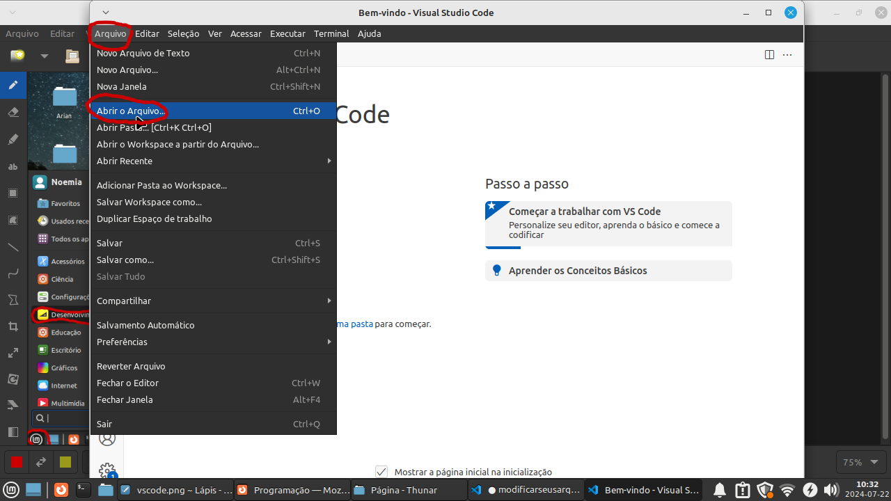
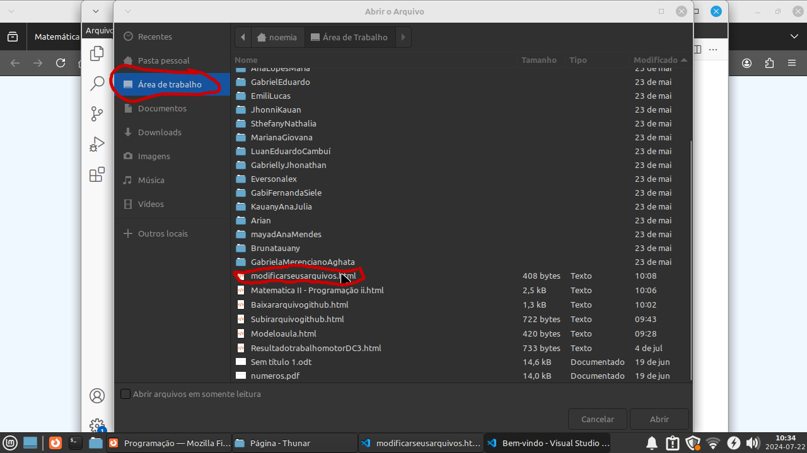

Para modificar seus arquivos vá no menu do linux mint, Desenvolvimento e VS code

depois de aberto o VS code vá em Arquivo e em Abrir arquivo ou se estiver inglês
vá em File e em Open file

depois basta selecionar o seu arquivo que queira modoficar selecionando a area de trabalho e o arquivo e cliclar e Abrir

neste caso selecionei o o arquivo desta página, agora só fazer suas modificações